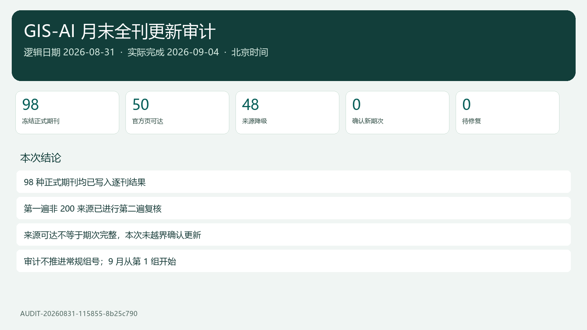

GIS-AI 期刊月末全刊更新审计简报
冻结范围 98 种正式期刊已全部完成核验；50 刊官方页面可达、48 刊证据充分降级，确认新增及任务失败均为 0。
审计结论
本次可恢复重打包复用 2026-09-04 完成的两阶段来源结果，没有生成伪造的 8 月 31 日历史快照，也没有重新扫描。
| 指标 | 数量 | 判定 |
|---|---|---|
| 冻结正式期刊 | 98 | 98/98 均有两阶段或可接受证据结果 |
| 官方页面可达 | 50 | COMPLETED |
| 有证据降级 | 48 | DEGRADED，不等于任务失败 |
| 新完整期次 | 0 | 未越界确认 |
| 新增正式论文 | 0 | 未越界确认 |
| 失败或待修复 | 0 | 任务层面无失败 |
需要关注
全刊审计有 48 刊来源降级，但失败或待修复任务为 0。
- 来源降级 地理科学：官方入口在两阶段核验中仍受限；未据此推断期次更新。核查时间 2026-09-04T11:48:15+08:00。首要证据 (geoscien.neigae.ac.cn)
- 来源降级 International Journal of Geographical Information Science：官方入口在两阶段核验中仍受限；未据此推断期次更新。核查时间 2026-09-04T11:48:15+08:00。首要证据 (www.tandfonline.com)
- 来源降级 Transactions in GIS：官方入口在两阶段核验中仍受限；未据此推断期次更新。核查时间 2026-09-04T11:48:15+08:00。首要证据 (onlinelibrary.wiley.com)
- 来源降级 GIScience & Remote Sensing：官方入口在两阶段核验中仍受限；未据此推断期次更新。核查时间 2026-09-04T11:48:15+08:00。首要证据 (www.tandfonline.com)
- 来源降级 International Journal of Digital Earth：官方入口在两阶段核验中仍受限；未据此推断期次更新。核查时间 2026-09-04T11:48:15+08:00。首要证据 (www.tandfonline.com)
另有 43 刊详见逐刊表。
98 刊冻结范围与逐刊结果
| 记录 | 期刊 | 组 | 本次状态 | 最新确认完整期次 | 新完整期次 | 新增正式论文 | Online First | 源健康 | 官方目录 |
|---|---|---|---|---|---|---|---|---|---|
| REG-001 | 地球信息科学学报 | 01 | COMPLETED | 2026-V28-I7 | 0 | 0 | 0 | OFFICIAL_PAGE_OK | 官方目录 (www.dqxxkx.cn) |
| REG-002 | 测绘学报 | 02 | COMPLETED | 2026-V55-I6 | 0 | 0 | 0 | OFFICIAL_PAGE_OK | 官方目录 (html.rhhz.net) |
| REG-003 | 武汉大学学报（信息科学版） | 03 | COMPLETED | 2026-V51-I8 | 0 | 0 | 0 | OFFICIAL_PAGE_OK | 官方目录 (ch.whu.edu.cn) |
| REG-004 | 测绘科学 | 04 | COMPLETED | 2026-V51-I7 | 0 | 0 | 0 | OFFICIAL_PAGE_OK | 官方目录 (chkd.cbpt.cnki.net) |
| REG-005 | 测绘通报 | 05 | COMPLETED | 2026-I6 | 0 | 0 | 0 | OFFICIAL_PAGE_OK | 官方目录 (html.rhhz.net) |
| REG-006 | 遥感学报 | 06 | COMPLETED | 2026-V30-I7 | 0 | 0 | 0 | OFFICIAL_PAGE_OK | 官方目录 (www.ygxb.ac.cn) |
| REG-007 | 地理学报 | 07 | COMPLETED | 2026-V81-I7 | 0 | 0 | 0 | OFFICIAL_PAGE_OK | 官方目录 (www.geog.com.cn) |
| REG-008 | 地理研究 | 08 | COMPLETED | 2026-V45-I7 | 0 | 0 | 0 | OFFICIAL_PAGE_OK | 官方目录 (www.dlyj.ac.cn) |
| REG-009 | 地理科学 | 09 | DEGRADED | 2026-V46-I7 | 0 | 0 | 0 | OFFICIAL_ERROR | 官方目录 (geoscien.neigae.ac.cn) |
| REG-010 | 地理科学进展 | 10 | COMPLETED | 2026-V45-I7 | 0 | 0 | 0 | OFFICIAL_PAGE_OK | 官方目录 (www.progressingeography.com) |
| REG-011 | 自然资源学报 | 11 | COMPLETED | 2026-V41-I7 | 0 | 0 | 0 | OFFICIAL_PAGE_OK | 官方目录 (www.jnr.ac.cn) |
| REG-012 | International Journal of Geographical Information Science | 12 | DEGRADED | 2026-V40-I7 | 0 | 0 | 0 | OFFICIAL_403 | 官方目录 (www.tandfonline.com) |
| REG-013 | Transactions in GIS | 13 | DEGRADED | 2026-V30-I5 | 0 | 0 | 0 | OFFICIAL_403 | 官方目录 (onlinelibrary.wiley.com) |
| REG-014 | Journal of Spatial Information Science | 14 | COMPLETED | 2026-NO32 | 0 | 0 | 0 | OFFICIAL_PAGE_OK | 官方目录 (josis.org) |
| REG-015 | GIScience & Remote Sensing | 15 | DEGRADED | 2025-V62-I1 | 0 | 0 | 0 | OFFICIAL_403 | 官方目录 (www.tandfonline.com) |
| REG-016 | International Journal of Digital Earth | 16 | DEGRADED | 2026-V19-I1 | 0 | 0 | 0 | OFFICIAL_403 | 官方目录 (www.tandfonline.com) |
| REG-017 | Geo-spatial Information Science | 17 | DEGRADED | 2026-V29-I2 | 0 | 0 | 0 | OFFICIAL_403 | 官方目录 (www.tandfonline.com) |
| REG-018 | Cartography and Geographic Information Science | 18 | DEGRADED | 2026-V53-I4 | 0 | 0 | 0 | OFFICIAL_403 | 官方目录 (www.tandfonline.com) |
| REG-019 | Computers, Environment and Urban Systems | 19 | DEGRADED | 2026-V127 | 0 | 0 | 0 | OFFICIAL_403 | 官方目录 (www.sciencedirect.com) |
| REG-020 | Environment and Planning B: Urban Analytics and City Science | 20 | DEGRADED | 2026-V53-I5 | 0 | 0 | 0 | OFFICIAL_403 | 官方目录 (journals.sagepub.com) |
| REG-021 | Computers & Geosciences | 21 | DEGRADED | 2026-V212 | 0 | 0 | 0 | OFFICIAL_403 | 官方目录 (www.sciencedirect.com) |
| REG-022 | Geographical Analysis | 22 | DEGRADED | 2026-V58-I3 | 0 | 0 | 0 | OFFICIAL_403 | 官方目录 (onlinelibrary.wiley.com) |
| REG-023 | Geoinformatica | 23 | COMPLETED | 2026-V30-I1 | 0 | 0 | 0 | OFFICIAL_PAGE_OK | 官方目录 (link.springer.com) |
| REG-024 | Remote Sensing of Environment | 24 | DEGRADED | 2026-V340 | 0 | 0 | 0 | OFFICIAL_403 | 官方目录 (www.sciencedirect.com) |
| REG-025 | ISPRS Journal of Photogrammetry and Remote Sensing | 25 | DEGRADED | 2026-V236 | 0 | 0 | 0 | OFFICIAL_403 | 官方目录 (www.sciencedirect.com) |
| REG-026 | IEEE Transactions on Geoscience and Remote Sensing | 26 | COMPLETED | 2025-V63 | 0 | 0 | 0 | OFFICIAL_PAGE_OK | 官方目录 (ieeexplore.ieee.org) |
| REG-027 | International Journal of Applied Earth Observation and Geoinformation | 27 | DEGRADED | 2026-V152 | 0 | 0 | 0 | OFFICIAL_403 | 官方目录 (www.sciencedirect.com) |
| REG-028 | Photogrammetric Engineering & Remote Sensing | 28 | COMPLETED | 2026-V92-I8 | 0 | 0 | 0 | OFFICIAL_PAGE_OK | 官方目录 (my.asprs.org) |
| REG-029 | Health & Place | 29 | DEGRADED | 2026-V99 | 0 | 0 | 0 | OFFICIAL_403 | 官方目录 (www.sciencedirect.com) |
| REG-030 | Spatial and Spatio-temporal Epidemiology | 30 | DEGRADED | 2026-V57 | 0 | 0 | 0 | OFFICIAL_403 | 官方目录 (www.sciencedirect.com) |
| REG-031 | International Journal of Health Geographics | 01 | COMPLETED | 2025-V24-I1 | 0 | 0 | 0 | OFFICIAL_PAGE_OK | 官方目录 (link.springer.com) |
| REG-032 | Annals of GIS | 02 | DEGRADED | 2026-V32-I2 | 0 | 0 | 0 | OFFICIAL_403 | 官方目录 (www.tandfonline.com) |
| REG-033 | Applied Geography | 03 | DEGRADED | 2026-V192 | 0 | 0 | 0 | OFFICIAL_403 | 官方目录 (www.sciencedirect.com) |
| REG-034 | ISPRS International Journal of Geo-Information | 04 | COMPLETED | 2026-V15-I6 | 0 | 0 | 0 | OFFICIAL_PAGE_OK | 官方目录 (www.mdpi.com) |
| REG-035 | Journal of Geographical Systems | 05 | COMPLETED | 2026-V28-I2 | 0 | 0 | 0 | OFFICIAL_PAGE_OK | 官方目录 (link.springer.com) |
| REG-036 | Journal of Geovisualization and Spatial Analysis | 06 | COMPLETED | 2026-V10-I1 | 0 | 0 | 0 | OFFICIAL_PAGE_OK | 官方目录 (link.springer.com) |
| REG-037 | Spatial Statistics | 07 | DEGRADED | 2026-V73 | 0 | 0 | 0 | OFFICIAL_403 | 官方目录 (www.sciencedirect.com) |
| REG-038 | Journal of Maps | 08 | DEGRADED | 2026-V22-I1 | 0 | 0 | 0 | OFFICIAL_403 | 官方目录 (www.tandfonline.com) |
| REG-039 | Earth Science Informatics | 09 | COMPLETED | 2026-V19-I8 | 0 | 0 | 0 | OFFICIAL_PAGE_OK | 官方目录 (link.springer.com) |
| REG-040 | Geocarto International | 10 | DEGRADED | 2025-V40-I1 | 0 | 0 | 0 | OFFICIAL_403 | 官方目录 (www.tandfonline.com) |
| REG-041 | Applied Spatial Analysis and Policy | 11 | COMPLETED | 2026-V19-I2 | 0 | 0 | 0 | OFFICIAL_PAGE_OK | 官方目录 (link.springer.com) |
| REG-042 | Big Earth Data | 12 | DEGRADED | 2026-V10-I2 | 0 | 0 | 0 | OFFICIAL_403 | 官方目录 (www.tandfonline.com) |
| REG-043 | GeoHealth | 13 | DEGRADED | 2026-V10-I7 | 0 | 0 | 0 | OFFICIAL_403 | 官方目录 (agupubs.onlinelibrary.wiley.com) |
| REG-044 | 计算机科学与探索 | 14 | DEGRADED | 2026-V20-I6 | 0 | 0 | 0 | OFFICIAL_ERROR | 官方目录 (www.ccfdl.cn) |
| REG-045 | 计算机学报 | 15 | DEGRADED | 2026-V49-I6 | 0 | 0 | 0 | OFFICIAL_ERROR | 官方目录 (cjc.ict.ac.cn) |
| REG-046 | 软件学报 | 16 | COMPLETED | 2026-V37-I8 | 0 | 0 | 0 | OFFICIAL_PAGE_OK | 官方目录 (www.jos.org.cn) |
| REG-047 | 中国科学：信息科学 | 17 | COMPLETED | 2026-V56-I6 | 0 | 0 | 0 | OFFICIAL_PAGE_OK | 官方目录 (www.sciengine.com) |
| REG-048 | 中国图象图形学报 | 18 | COMPLETED | 2026-V31-I8 | 0 | 0 | 0 | OFFICIAL_PAGE_OK | 官方目录 (www.cjig.cn) |
| REG-049 | 中国卫生统计 | 19 | COMPLETED | 2026-V43-I2 | 0 | 0 | 0 | OFFICIAL_PAGE_OK | 官方目录 (cjournal.hep.com.cn) |
| REG-050 | 中国科学院院刊 | 20 | DEGRADED | 2026-V41-I6 | 0 | 0 | 0 | OFFICIAL_ERROR | 官方目录 (www.bulletin.cas.cn) |
| REG-051 | Artificial Intelligence | 21 | DEGRADED | 2026-V355 | 0 | 0 | 0 | OFFICIAL_403 | 官方目录 (www.sciencedirect.com) |
| REG-052 | Journal of Machine Learning Research | 22 | COMPLETED | 2025-V26 | 0 | 0 | 0 | OFFICIAL_PAGE_OK | 官方目录 (www.jmlr.org) |
| REG-053 | Machine Learning | 23 | COMPLETED | 2026-V115-I8 | 0 | 0 | 0 | OFFICIAL_PAGE_OK | 官方目录 (link.springer.com) |
| REG-054 | IEEE Transactions on Pattern Analysis and Machine Intelligence | 24 | COMPLETED | 2026-V48-I8 | 0 | 0 | 0 | OFFICIAL_PAGE_OK | 官方目录 (www.computer.org) |
| REG-055 | International Journal on Artificial Intelligence Tools | 25 | DEGRADED | 2026-V35-I3 | 0 | 0 | 0 | OFFICIAL_403 | 官方目录 (www.worldscientific.com) |
| REG-056 | International Journal of Intelligent Systems | 26 | DEGRADED | 2025-V2025-I1 | 0 | 0 | 0 | OFFICIAL_403 | 官方目录 (onlinelibrary.wiley.com) |
| REG-057 | International Journal of Pattern Recognition and Artificial Intelligence | 27 | DEGRADED | 2026-V40-I10 | 0 | 0 | 0 | OFFICIAL_403 | 官方目录 (www.worldscientific.com) |
| REG-058 | Applied Intelligence | 28 | COMPLETED | 2026-V56-I13 | 0 | 0 | 0 | OFFICIAL_PAGE_OK | 官方目录 (link.springer.com) |
| REG-059 | Applied Artificial Intelligence | 29 | DEGRADED | 2025-V39-I1 | 0 | 0 | 0 | OFFICIAL_403 | 官方目录 (www.tandfonline.com) |
| REG-060 | Artificial Intelligence Review | 30 | COMPLETED | 2026-V59-I8 | 0 | 0 | 0 | OFFICIAL_PAGE_OK | 官方目录 (link.springer.com) |
| REG-061 | Computational Intelligence | 01 | DEGRADED | 2026-V42-I3 | 0 | 0 | 0 | OFFICIAL_403 | 官方目录 (onlinelibrary.wiley.com) |
| REG-062 | IEEE Intelligent Systems | 02 | COMPLETED | 2026-V41-I3 | 0 | 0 | 0 | OFFICIAL_PAGE_OK | 官方目录 (www.computer.org) |
| REG-063 | IEEE Computational Intelligence Magazine | 03 | COMPLETED | 2026-V21-I2 | 0 | 0 | 0 | OFFICIAL_PAGE_OK | 官方目录 (ieeexplore.ieee.org) |
| REG-064 | ACM Transactions on Intelligent Systems and Technology | 04 | DEGRADED | 2026-V17-I4 | 0 | 0 | 0 | OFFICIAL_403 | 官方目录 (dl.acm.org) |
| REG-065 | New Generation Computing | 05 | COMPLETED | 2026-V44-I3 | 0 | 0 | 0 | OFFICIAL_PAGE_OK | 官方目录 (link.springer.com) |
| REG-066 | Journal of Intelligent Information Systems | 06 | COMPLETED | 2026-V64-I4 | 0 | 0 | 0 | OFFICIAL_PAGE_OK | 官方目录 (link.springer.com) |
| REG-067 | Knowledge-Based Systems | 07 | DEGRADED | 2026-V346 | 0 | 0 | 0 | OFFICIAL_403 | 官方目录 (www.sciencedirect.com) |
| REG-068 | Expert Systems with Applications | 08 | DEGRADED | 2026-V320 | 0 | 0 | 0 | OFFICIAL_403 | 官方目录 (www.sciencedirect.com) |
| REG-069 | IEEE Transactions on Knowledge and Data Engineering | 09 | COMPLETED | 2026-V38-I8 | 0 | 0 | 0 | OFFICIAL_PAGE_OK | 官方目录 (www.computer.org) |
| REG-070 | ACM Transactions on Knowledge Discovery from Data | 10 | DEGRADED | 2026-V20-I5 | 0 | 0 | 0 | OFFICIAL_403 | 官方目录 (dl.acm.org) |
| REG-071 | Knowledge and Information Systems | 11 | COMPLETED | 2025-V67-I12 | 0 | 0 | 0 | OFFICIAL_PAGE_OK | 官方目录 (link.springer.com) |
| REG-072 | Data Mining and Knowledge Discovery | 12 | COMPLETED | 2026-V40-I4 | 0 | 0 | 0 | OFFICIAL_PAGE_OK | 官方目录 (link.springer.com) |
| REG-073 | WIREs Data Mining and Knowledge Discovery | 13 | DEGRADED | 2026-V16-I2 | 0 | 0 | 0 | OFFICIAL_403 | 官方目录 (wires.onlinelibrary.wiley.com) |
| REG-074 | Statistical Analysis and Data Mining: The ASA Data Science Journal | 14 | DEGRADED | 2026-V19-I4 | 0 | 0 | 0 | OFFICIAL_403 | 官方目录 (onlinelibrary.wiley.com) |
| REG-075 | The VLDB Journal | 15 | COMPLETED | 2026-V35-I4 | 0 | 0 | 0 | OFFICIAL_PAGE_OK | 官方目录 (link.springer.com) |
| REG-076 | Discover Computing | 16 | COMPLETED | 2025-V28-I1 | 0 | 0 | 0 | OFFICIAL_PAGE_OK | 官方目录 (link.springer.com) |
| REG-077 | Big Data | 17 | DEGRADED | 2026-V14-I3 | 0 | 0 | 0 | OFFICIAL_403 | 官方目录 (journals.sagepub.com) |
| REG-078 | Social Network Analysis and Mining | 18 | COMPLETED | 2025-V15-I1 | 0 | 0 | 0 | OFFICIAL_PAGE_OK | 官方目录 (link.springer.com) |
| REG-079 | Social Networks | 19 | DEGRADED | 2026-V85 | 0 | 0 | 0 | OFFICIAL_403 | 官方目录 (www.sciencedirect.com) |
| REG-080 | Applied Soft Computing | 20 | DEGRADED | 2026-V197 | 0 | 0 | 0 | OFFICIAL_403 | 官方目录 (www.sciencedirect.com) |
| REG-081 | Soft Computing | 21 | COMPLETED | 2026-V30-I6 | 0 | 0 | 0 | OFFICIAL_PAGE_OK | 官方目录 (link.springer.com) |
| REG-082 | Evolutionary Computation | 22 | DEGRADED | 2026-V34-I2 | 0 | 0 | 0 | OFFICIAL_403 | 官方目录 (direct.mit.edu) |
| REG-083 | IEEE Transactions on Evolutionary Computation | 23 | COMPLETED | 2026-V30-I4 | 0 | 0 | 0 | OFFICIAL_PAGE_OK | 官方目录 (ieeexplore.ieee.org) |
| REG-084 | Evolutionary Intelligence | 24 | COMPLETED | 2026-V19-I4 | 0 | 0 | 0 | OFFICIAL_PAGE_OK | 官方目录 (link.springer.com) |
| REG-085 | Journal of Combinatorial Optimization | 25 | COMPLETED | 2026-V52-I1 | 0 | 0 | 0 | OFFICIAL_PAGE_OK | 官方目录 (link.springer.com) |
| REG-086 | Journal of the Royal Statistical Society Series A: Statistics in Society | 26 | DEGRADED | 2026-V189-I3 | 0 | 0 | 0 | OFFICIAL_403 | 官方目录 (academic.oup.com) |
| REG-087 | Journal of the Royal Statistical Society Series B: Statistical Methodology | 27 | DEGRADED | 2026-V88-I3 | 0 | 0 | 0 | OFFICIAL_403 | 官方目录 (academic.oup.com) |
| REG-088 | Journal of Computational and Graphical Statistics | 28 | DEGRADED | 2026-V35-I3 | 0 | 0 | 0 | OFFICIAL_403 | 官方目录 (www.tandfonline.com) |
| REG-089 | Computational Statistics | 29 | COMPLETED | 2026-V41-I5 | 0 | 0 | 0 | OFFICIAL_PAGE_OK | 官方目录 (link.springer.com) |
| REG-090 | Computational Statistics & Data Analysis | 30 | DEGRADED | 2026-V217 | 0 | 0 | 0 | OFFICIAL_403 | 官方目录 (www.sciencedirect.com) |
| REG-091 | Statistics in Medicine | 01 | DEGRADED | 2026-V45-I15-17 | 0 | 0 | 0 | OFFICIAL_403 | 官方目录 (onlinelibrary.wiley.com) |
| REG-092 | Journal of Statistical Software | 02 | COMPLETED | 2026-V116-I8 | 0 | 0 | 0 | OFFICIAL_PAGE_OK | 官方目录 (www.jstatsoft.org) |
| REG-093 | Environmental Modelling & Software | 03 | DEGRADED | 2026-V202 | 0 | 0 | 0 | OFFICIAL_403 | 官方目录 (www.sciencedirect.com) |
| REG-094 | Computational Geosciences | 04 | COMPLETED | 2026-V30-I3 | 0 | 0 | 0 | OFFICIAL_PAGE_OK | 官方目录 (link.springer.com) |
| REG-095 | Geosciences Journal | 05 | COMPLETED | 2026-V30-I4 | 0 | 0 | 0 | OFFICIAL_PAGE_OK | 官方目录 (link.springer.com) |
| REG-096 | Nature Geoscience | 06 | COMPLETED | 2026-V19-I8 | 0 | 0 | 0 | OFFICIAL_PAGE_OK | 官方目录 (www.nature.com) |
| REG-097 | Science China Information Sciences | 07 | COMPLETED | 2026-V69-I8 | 0 | 0 | 0 | OFFICIAL_PAGE_OK | 官方目录 (link.springer.com) |
| REG-098 | Science China Technological Sciences | 08 | COMPLETED | 2026-V69-I8 | 0 | 0 | 0 | OFFICIAL_PAGE_OK | 官方目录 (link.springer.com) |
审计任务
| Task_ID | 计划日期 | 组 | 类型 | 状态 |
|---|---|---|---|---|
AUDIT-20260831-ALL | 2026-08-31 | N/A | MONTH_END_31_AUDIT | COMPLETED |
新完整期次及正式论文
已核查，0 项 本批次没有取得满足完整性门控的新期次，因此没有新增正式归期论文。候选信号未越界计入。
网络首发
已核查，0 项 本轮没有把发现源记录确认为新的 Online First 事件；Crossref 记录仅用于发现与导航。
勘误与撤稿
已核查，0 项 现有扫描结果未确认勘误、撤稿或表达式关注事项。
主题与阅读路线
本轮没有新增正式论文可做证据充分的主题聚类，因此不从题名或发现信号推断研究主题。建议阅读路线：先检查“需要关注”的降级来源，再由逐刊官方目录进入后续人工核验。
数据源健康
50 刊官方入口可达，48 刊经过第二遍复核后仍为 403、429、超时或连接失败；全部保留官方链接、核查时间和降级说明。失败或待修复任务为 0。
期刊级摘要图

图中只点名聚合结论；HTML 表格保留全部 98 刊结果。
证据与审计信息
Brief_ID：AUDIT-20260831
源扫描 Run_ID：48e44ce7-cb9c-45d5-a75b-899397a4ae99
源提交：AUDIT-20260831-115855-8b25c790
重打包提交：AUDIT-20260831-184013-8b33fe16
Recovery_Batch_ID：RECOVERY-20260831-20260904-5ce52c18
冻结范围 98、完成 98、失败 0、重复抑制 0、差异复核 0。本页是不可变发布版。
两阶段审计边界
第一遍非 200 的正式源执行第二遍复核；访问受限只标记为 DEGRADED，不推进完整期次基线，不以 Crossref 或搜索发现替代官方完整性证据。